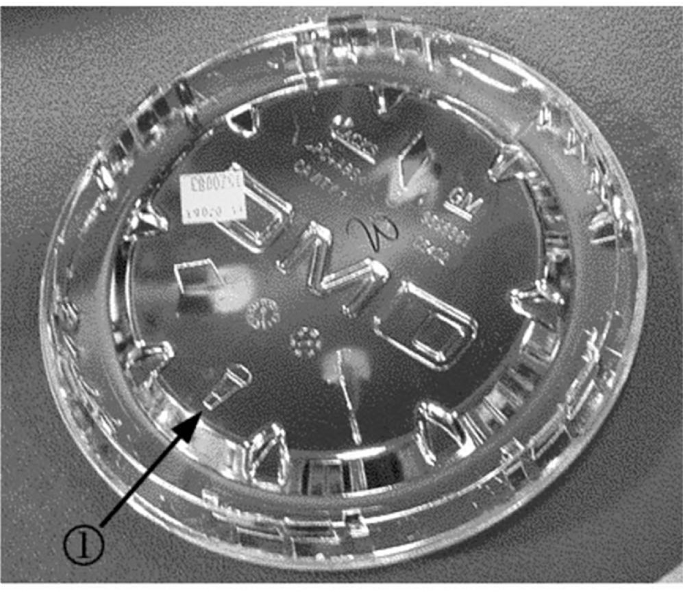
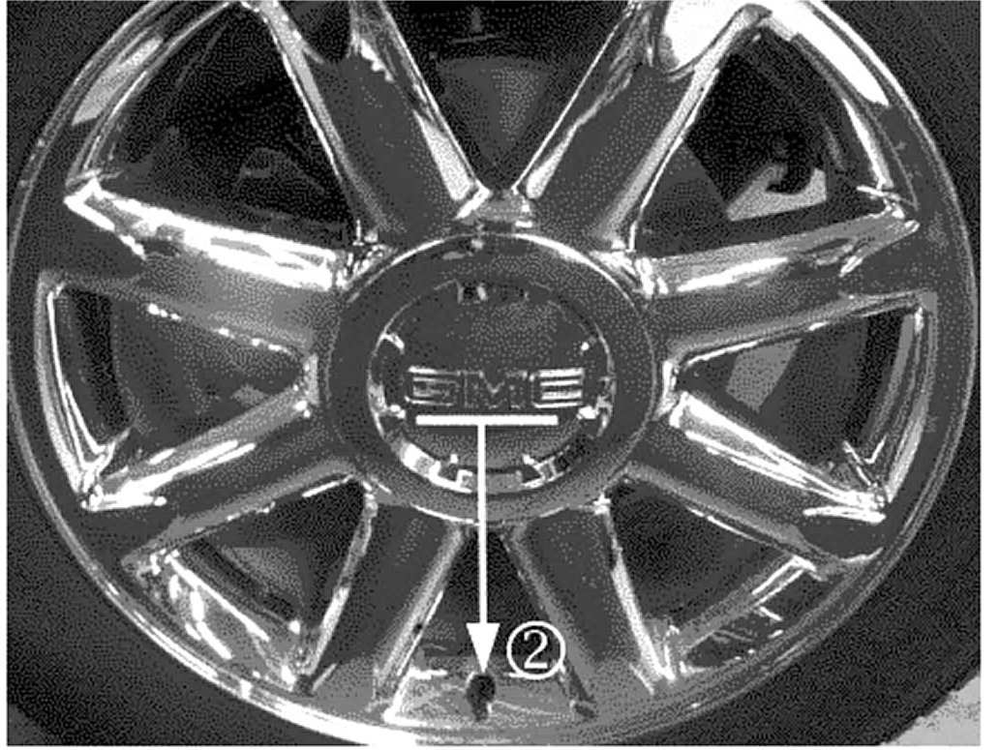
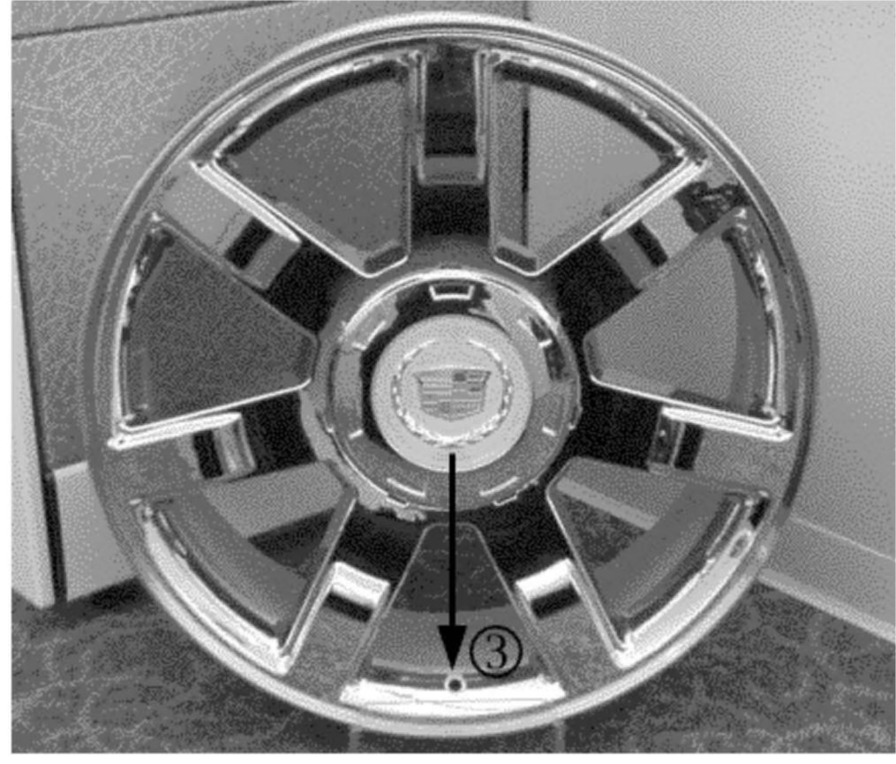

Wheels - Wheel Center Cap Installation Tips
Bulletin No.: 07-03-10-007Date: March 27, 2007
INFORMATION
Subject:
Information on Correct Installation (Orientation) of Wheel Center Caps
Models:
2007 Cadillac Escalade, Escalade ESV, Escalade EXT
2007 Chevrolet Avalanche, Suburban, Tahoe
2007 GMC Yukon, Yukon XL, Yukon Denali, Yukon Denali XL
with 20" or 22" Wheels (RPOS P41, P56, PDO, or PD5)
The purpose of this bulletin is to inform dealers of the proper installation methods for the wheel center caps on 20" and 22" wheels. Maintaining the correct orientation during installation is critical for secure fit and retention of the wheel center caps.
Field reports indicate that some wheel center caps may have experienced a rattle condition or may be missing. These conditions may be caused by incorrect installation, with the wheel center cap not being installed in the correct orientation.
These conditions can be prevented by correctly installing the wheel center caps. This bulletin contains information to assist technicians in the proper installation of wheel center caps.
Wheel Center Cap Installation Tips

The wheel center cap for which a specific orientation is required will have a tire valve stem icon on the back face (1). This icon should be aligned with the location of the tire valve stem.

The front face of the wheel center cap should be inspected after installation for the correct orientation. On GMC wheels, the tire valve stem should be directly below the GMC logo when the GMC logo is viewed in its upright level orientation (2). The "darts" on the wheel center cap should also be aligned with the spokes.

On Cadillac wheels, the tire valve stem should be directly below the bottom point of the Cadillac wreath and crest logo (3). Also, the seven small recesses at the edge of the wheel center cap should each be aligned with a spoke.
When the wheel center cap is properly installed in the correct orientation, the wheel center caps should be securely retained and should not exhibit any rattle or noise condition.

Disclaimer